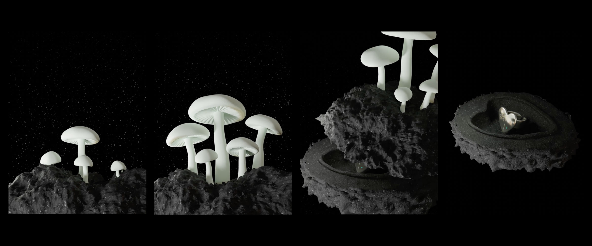

Nightfruiti
나이트프루티는 자연을 모티브로 다양한 형상과 용도를 가진 오브제를 만드는 세라믹 스튜디오입니다.
제품의 특성과 브랜드의 아이덴티티를 드러내기 위해 제품의 성질과 자연의 모습 담은 짧은 프로모션 영상들을 제작했습니다.
제품은 흙과 공예의 우연하고 자연스러운 특징이 잘 드러날 수 있도록 모델링 되었으며,
제품의 특성을 효과적으로 드러낼 수 있는 자연 배경과 함께 연출되었습니다.
Nightfruiti is a ceramic studio that creates objects with various shapes and uses based on nature. we created short promotional videos showing properties of the product and what nature looks like to reveal the characteristics of the product and the brand's identity. The product was modeled to reveal the accidental and natural features of soil and crafts. It is directed with a natural background that can effectively reveal the characteristics of the product.
Nightfruiti is a ceramic studio that creates objects with various shapes and uses based on nature. we created short promotional videos showing properties of the product and what nature looks like to reveal the characteristics of the product and the brand's identity. The product was modeled to reveal the accidental and natural features of soil and crafts. It is directed with a natural background that can effectively reveal the characteristics of the product.
